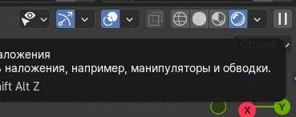

Финал — собрать всё, что накопилось с дня 1, в одну цельную картинку.
Шаги на сегодня
- Чек-лист: ландшафт без дыр, вода не утопляет берег, башня на плато, солнце и камера настроены (день 5, день 6).
- Убрать «подсказки» из вьюпорта перед рендером: нажмите
Shift + Alt + Zили щёлкните иконку «Наложения» (два круга): скроются сетка, оси, обводки выделения и лишние оверлеи — удобно оценить чистую картинку (скрин 333). При необходимости отдельно отключите гизмы в меню рядом. - Переключите затенение вьюпорта на Rendered (последняя круглая иконка справа вверху) — увидите предпросмотр со светом и материалами без полного
F12. - В
Render Propertiesпроверьте движок (Cycles / GPU, как в дне 5) и сэмплы (Cycles: 128–512 для пробы, 512–1024 для финала). - Цветовая гамма: Filmic или AgX в
Color Management. - Финальный кадр: нажмите
F12— Blender посчитает изображение в отдельном окне. Это главная горячая клавиша рендера. - При шуме на Cycles включите
Denoiseили поднимите число сэмплов. - Сохранение: в окне результата
Image → Save As→ PNG. Либо заранее задайте путь вOutput Propertiesи сохраните из того же окна после рендера. - Подготовьте 3–5 предложений для защиты проекта.
Скрин: оверлеи и режим Rendered

Shift + Alt + Z — скрыть оверлеи. Справа включён режим Rendered для превью перед F12.Горячие клавиши финала
Shift + Alt + Z— показать / скрыть наложения (сетка, обводки и т.п.).F12— рендер текущего кадра.
После курса
- Архивируйте финальный
.blendи PNG в одну папку — удобно для портфолио или домашней сдачи.